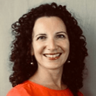

SCHEDULE
VIRTUAL LOCATION
Zoom
PHYSICAL LOCATION
1. Go to the Honors, Scholars, and Fellows (HSF) House in the same building as, but has separate entrance from, the Chick-Fil-A.
2. Go up to the 4th floor of HSF, Room 4003 (Nancy Marcus Great Hall).
Breakout rooms are held in other rooms at HSF later that day.
2. Go up to the 4th floor of HSF, Room 4003 (Nancy Marcus Great Hall).
Breakout rooms are held in other rooms at HSF later that day.
1:00 EST
Welcome
Dr. Jim Clark
Provost and Executive Vice President for Academic Affairs, Florida State University.
1:05 EST
Introduction: Going from Postdoc to Academic and Non-Academic Jobs

Dr. Chris Smith
Postdoctoral Affairs Program Administrator, Virginia Tech.
Ph.D., Neurobiology.
Ph.D., Neurobiology.
Academic
1:20 EST
One Postdoc's Journey on the Academic Job Market

Dr. Kenneth Hanson
Associate Professor, Department of Chemistry & Biochemistry, Florida State University.
Ph.D., Chemistry.
Ph.D., Chemistry.
1:50 EST
Panel Discussion
Dr. Francesca Bernardi
Assistant Professor, Department of Mathematical Sciences, Worcester Polytechnic Institute.
Ph.D., Mathematics.
Ph.D., Mathematics.

Dr. Erminia Fardone
Assistant Scientist, Miller School of Medicine, University of Miami.
Ph.D., Neurobiology and Life Sciences.
Ph.D., Neurobiology and Life Sciences.

Dr. William Dewar
Pierre Welander Professor, Department of Earth, Ocean, and Atmospheric Science, Florida State University.
Ph.D., Physical Oceanography.
Ph.D., Physical Oceanography.

Dr. Trelani Milburn-Chapman
Assistant Professor, Communication Sciences and Disorders, University of Alberta Edmonton.
Ph.D., Speech-Language Pathology.
Ph.D., Speech-Language Pathology.
Dr. Symone Alexander
Assistant Professor, Department of Chemical Engineering, Auburn University.
Ph.D., Macromolecular Science and Engineering.
Ph.D., Macromolecular Science and Engineering.
2:20 EST
Breakout Rooms
GO TO
- Zoom Room 1 / HSF Great Hall for Francesca Bernardi
- Zoom Room 2 / HSF Room 2008 for Erminia Fardone
- Zoom Room 3 / HSF Room 2009 for William Dewar
- Zoom Room 4 / HSF Room 3008 for Trelani Chapman
- Zoom Room 5 / HSF Room 3009 for Symone Alexander
2:50 EST
Break
Non‑academic
3:00 EST
How to Transition to Non-Academic Jobs

Dr. Tracy Costello
Career Coach, Postdoc Consultant. University of South Florida.
Ph.D., Human and Molecular Genetics.
Ph.D., Human and Molecular Genetics.
3:30 EST
Panel Discussion
Dr. Nathan Crock
Director, NewSci Labs; Affiliate Faculty in Scientific Computing, Florida State University.
Ph.D., Computational Science.
Ph.D., Computational Science.

Dr. Anne Krook
Career Coach. Founder and Principal, Practical Workplace Advice.
Ph.D., English Language and Literature.
Ph.D., English Language and Literature.
Dr. Troy Lowry
Research Analyst, Institute for Defense Analyses, Alexandria-VA.
Ph.D., Physics.
Ph.D., Physics.
Dr. Tracy Costello
Career Coach, Postdoc Consultant. University of South Florida.
Ph.D., Human and Molecular Genetics.
Ph.D., Human and Molecular Genetics.
Dr. Jesse Dunietz
Science Writer and Communication Trainer, AAAS Science & Technology Policy Fellow, U.S. Department of State.
Ph.D., Computer Science.
Ph.D., Computer Science.
4:00 EST
Breakout Rooms
GO TO
- Zoom Room 1 / HSF Great Hall for Nathan Crock
- Zoom Room 2 / HSF Room 2008 for Anne Krook
- Zoom Room 3 / HSF Room 2009 for Troy Lowry
- Zoom Room 4 / HSF Room 3008 for Tracy Costello
- Zoom Room 5 / HSF Room 3009 for Jesse Dunietz
4:30 EST
Closing

Dr. Debi Fadool
Distinguished Research Professor and Associate Dean, Program in Neuroscience and Molecular Biophysics, Florida State University.
Ph.D., Zoology.
Ph.D., Zoology.
5:00 EST
Catered Reception & Dinner
Reserved for speakers and Florida State University postdocs at HSF Great Hall. Vegetarian options included.
Participants are welcome to bring desserts from their home country.
Participants are welcome to bring desserts from their home country.